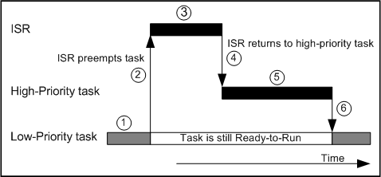
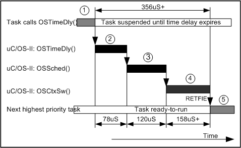
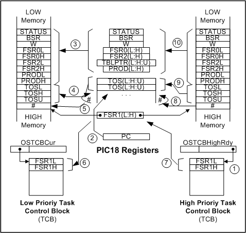
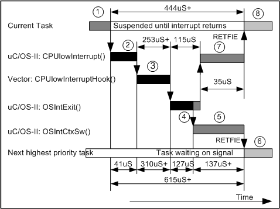

A real-time kernel is software that manages the time of a microprocessor or microcontroller to ensure that all time critical events are processed as efficiently as possible. This application note describes how a real-time kernel, µC/OS-II works with the Microchip PIC18 series of microcontrollers. The application note assumes that you are familiar with the PIC and the C programming language.
A real-time kernel allows your project to be divided into multiple independent elements called tasks. A task is a simple program which competes for CPU time. With most real-time kernels, each task is given a priority based on its importance. When you design a product using a real-time kernel you split the work to be done into tasks which are responsible for a portion of the problem. A real-time kernel also provides valuable services to your application such as time delays, system time, message passing, synchronization, mutual-exclusion and more.
Most real-time kernels are preemptive. A preemptive kernel ensures that the highest-priority task ready to run is always given control of the CPU. When an ISR (Interrupt Service Routine) makes a higher priority task ready-to-run, the higher-priority task will be given control of the CPU as soon as all nested interrupts complete. The execution profile of a system designed using a preemptive kernel is illustrated in figure 1. As shown, a low-priority task is executing (1). An asynchronous event interrupts the microprocessor (2). The microprocessor services the interrupt (3) which makes a high-priority task ready for execution. Upon completion, the ISR invokes a service provided by the kernel which decides to return to the high-priority task instead of the low-priority task (4). The high-priority task executes to completion, unless it also gets interrupted (5). At the end of the high-priority task, the kernel resumes the low-priority task (6). As you can see, the kernel ensures that time critical tasks are performed first. Furthermore, execution of time critical tasks are deterministic and are almost insensitive to code changes. In fact, in many cases, you can add low-priority tasks without affecting the responsiveness of you system to high-priority tasks. During normal execution, a low-priority task can make a higher-priority task ready for execution. At that point, the kernel immediately suspends execution of the lower priority task in order to resume the higher priority one.
|  |
| Figure 1, Execution profile of a preemptive kernel such as µC/OS-II. |
A real-time kernel basically performs two operations: Scheduling and Context Switching. Scheduling is the process of determining whether there is a higher priority task ready to run. When a higher-priority task needs to be executed, the kernel must save all the information needed to eventually resume the task that is being suspended. The information saved is called the task context. The task context generally consist of most, if not all, CPU registers. When switching to a higher priority task, the kernel perform the reverse process by loading the context of the new task into the CPU so that the task can resume execution where it left off.
The PIC18xxxx series has some new features that enable it to be better suited for a real-time kernel than previous Microchip microcontrollers. It has a C compiler specifically for it; MPLAB-C18. There are new registers that add the ability to modify the function return stack, a vital part of getting a preemptive kernel to work on a PIC microcontroller.
µC/OS-II (pronounced micro C OS version 2) is a portable, ROMable, preemptive, real-time, multitasking kernel and can manage up to 63 tasks. The internals of µC/OS-II are described in my book called: MicroC/OS-II, The Real-Time Kernel. The book also includes a floppy disk containing all the source code. µC/OS-II is written in C for sake of portability, however, microprocessor specific code is written in assembly language. Assembly language and microprocessor specific code is kept to a minimum. µC/OS-II is comparable in performance with many commercially available kernels. The execution time for every service provided by µC/OS-II (except one) is both deterministic and constant. µC/OS-II allows you to:
µC/OS-II requires that you call OSInit() before you start using any of the other services provided by µC/OS-II. After calling OSInit() you will need to create at least one task before you start multitasking (i.e. before calling OSStart()). All tasks managed by µC/OS-II needs to be created. You create a task by simply calling a service provided by µC/OS-II (described later). You need to create each task in order to prepare them for multitasking. If you want, you can create all your tasks before calling OSStart(). Once multitasking starts, µC/OS-II will start executing the highest priority task that has been created. You should note that interrupts will be enabled as soon as the first task starts execution. Your main() function will thus look as shown in listing 1.
void main (void) |
| Listing 1, Initializing µC/OS-II and starting multitasking. |
A task under µC/OS-II must always be written as an infinite loop as shown in listing 2. When your task first executes, it will be passed an argument (pdata) which can be made to point to task specific data when the task is created. If you don’t use this feature, you should simply equate pdata to pdata as shown below to prevent the compiler from generating a warning. Even though a task is an infinite loop, it must not use up all of the CPU’s time. To allow other tasks to get a chance to execute, you have to write each task such that the task either suspends itself until some amount of time expires, wait for a semaphore, wait for a message from either another task or an ISR or simply suspend itself indefinitely until explicitly resumed by another task or an ISR. µC/OS-II provides services to accomplish this.
void UserTask (void *pdata) |
| Listing 2, Layout of a task under µC/OS-II. |
A task is created by calling the OSTaskCreate() function. OSTaskCreate()
requires four arguments
as shown in the function prototype of listing 3.
INT8U OSTaskCreate (void (*task)(void *pd), |
| Listing 3, Function prototype of OSTaskCreate(). |
task is a pointer to the task you are creating. pdata is a pointer to an optional argument that you can pass to your task when it begins execution. This feature allows you to write a generic task which is personalized based on arguments passed to it. For example, you can design a generic serial port driver task which gets passed a pointer to a structure defining the ports parameters such as the address of the port, its interrupt vector, the baud rate etc. ptos is a pointer to the task’s top-of-stack. Finally, prio is the task’s priority. With µC/OS-II, each task must have a unique priority. The lower the priority number, the more important the task is. In other words, a task having a priority of 10 is more important than a task with a priority of 20.
With µC/OS-II, each task can have a different stack size. This feature greatly reduces the amount of RAM needed because a task with a small stack requirement doesn’t get penalized because another task in your system requires a large amount of stack space. You should note that you can locate a task’s stack just about anywhere in the PIC’s address space. This is accomplished by specifying the task’s top of stack through a constant (or a #define) as shown in the two examples of listing 4.
OS_STK Task1Stk[1000]; |
| Listing 4, Task stacks. |
OSTaskCreate() returns a value back to its caller to notify it about whether the task creation was successful or not. When a task is created, µC/OS-II assigns a Task Control Block (TCB) to the task. The TCB is used by µC/OS-II to store the priority of the task, the current state of the task (ready, waiting for an event, delayed, etc.), the current location of the task’s top-of-stack and, other kernel related data. µC/OS-II also provides a more powerful function to create a task, OSTaskCreateExt(). Details about this function are found in the book: MicroC OS-II: The Real-Time Kernel (ISBN 1-57820-103-9).
The actual prototype of OSTimeDly() for example is actually:
void OSTimeDly(INT16U ticks); |
| Listing 5, Delaying a task until time expires. |
You will notice that every function starts with the letters ‘OS’. This makes it easier for you to know that the function call is related to a kernel service (i.e. an Operating System call). Also, the function naming convention groups services by functions: ‘OSTask...’ are task management functions, ‘OSTime...’ are time management functions, etc. Another item you should notice is that non-standard data types are in upper-case: INT8U, INT16U, INT32U and OS_EVENT. INT8U, INT16U and INT32U represent an unsigned 8-bit value, an unsigned 16-bit value, and an unsigned 32-bit value, respectively. OS_EVENT is a typedef’ed data structure declared in uCOS_II.H and is used to hold information related to semaphore, message mailboxes and message queues. Your application will in fact have to declare storage for a pointer to this data structure as follows:
OS_EVENT *MySem; |
| Listing 6, Pointer to Event Control Block. |
This indicates that the pointer MySem will be able to access the OS_EVENT data structure which may be located in another bank. OS_EVENT is used in the same capacity as the FILE data-type used in standard C library. OSSemCreate(), OSMboxCreate() and OSQCreate() return a pointer which is used to identify the semaphore, mailbox or queue, respectively.
µC/OS-II was ported to the PIC using the MPLAB-C18 tool chain and the complete source code for the port to the PIC18 is available from www.sputnickonline.com. The PIC18 port has been tested on the Microchip PICDEM-2 Plus evaluation board and the test code provided with the port is assumed to run on this target. The test code can, however, be easily modified to support other environments.
Because µC/OS-II is a preemptive kernel, it always executes the highest priority task that is ready to run. As your tasks execute they will eventually invoke a service provided by µC/OS-II to either wait for time to expire, wait on a semaphore or wait for a message from another task or an ISR. A context switch will result when the outcome of the service is such that the currently running task cannot continue execution. For example, figure 4 shows what happens when a task decides to delay itself for a number of ticks. In (1), the task calls OSTimeDly() which is a service provided by µC/OS-II. OSTimeDly() places the task in a list of tasks waiting for time to expire (2). Because the task is no longer able to execute, the scheduler (OSSched()) is invoked to find the next most important task to run (3). A context switch is performed by calling the OSCtxSw() function (4). The function OSCtxSw() is written in inline assembly because it directly manipulates PIC registers. All execution times are shown assuming a 4 MHz crystal. The highest priority task executes at the completion of the PIC’s RETFIE instruction (5).
|  |
| Figure 4. |
The work done by OSCtxSw() is illustrated in figure 5. The scheduler loads OSTCBHighRdy with the address of the new task’s TCB (1) before invoking OSCtxSw(). OSTCBCur already points to the TCB of the task to suspend. The OSCtxSw() function automatically pushes the return address onto the function return stack (2). OSCtxSw() starts off by saving the remainder of the PIC’s registers onto the user stack (3) and then, moves the entire hardware function return stack of return addresses to the user stack (4). The number of return addresses saved is then saved to the end of the user stack (5). The final step in saving the context of the task to be suspended is to store the top-of-stack into the current task’s TCB (6). The second half of the context switch operation restores the context of the new task. This is performed in the following four steps. First, the user stack pointer is loaded with the new task’s top-of-stack (7). Second, the number of items in the function return stack is read (8), then the return addresses are restored to the hardware function return stack that many times (9). Third, the remainder of the PIC's registers are restored from the user stack (10). Finally, a return from interrupt instruction (RETFIE) is executed to cause the new task to resume execution where it left off. As shown in figure 4, a context switch for the large model takes only about 340µS at 4 MHz.
|  |
| Figure 5. |
Under µC/OS-II, you must write your ISR's as shown in listing 7. This code assumes you are using the MPLAB-C18 compiler. As you can see, all of the interrupts are handled in the CPUlowInterruptHook() function or the CPUhighInterruptHook() function.
For the low priority interrupt, you don't need to worry about saving registers or anything because the CPU specific function CPUlowInterrupt() handles that for you. You then need to provide code to process the interrupting device. Note that you are responsible for clearing the interrupting device (if needed).
One of the timer interrupts must be a low priority interrupt and must call OSTimeTick() on a regular period. A 10ms or longer period is recommended. The code in listing 7 shows an example.
After the interrupts are taken care of in the CPUlowInterruptHook() function, the CPU specific code starts exiting the interrupt. OSIntExit() is called as it decrements the nesting counter and, when the nesting counter reaches 0, all interrupts have nested and the scheduler is invoked to determine whether the ISR needs to return to the interrupted task or, whether a higher priority task has been made ready to run by one of the ISR's. If there is a higher priority task, µC/OS-II will need to perform a context switch to return to the more important task.
For the high priority interrupt, do not call any OS functions because they will not realize that a interrupt is running. You must also manually save any registers like normal through the '#pragma interrupt' statement.
void CPUlowInterruptHook(void)
{
if(INTCONbits.TMR0IF) { // check for TMR0 overflow
INTCONbits.TMR0IF = 0; // clear interrupt flag
TMR0H = 0xD8; // set the timer to expire in 10 ms. (at 4MHz)
TMR0L = 0xA0;
OSTimeTick(); // Call required os timer
}
/* Insert other interrupt items here */
}
#pragma interrupt CPUhighInterruptHook
void CPUhighInterruptHook(void)
{
/* Insert high priority interrupt items here
* Do not make any OS function calls. */
} |
| Listing 7. |
The work done by an low priority interrupt is illustrated in figure 6. In (1), the task is interrupted, saving the return address and then jumping to the CPUlowInterrupt() function where the registers are saved (2). The application specific interrupt handlers are then processed in the CPUlowInterruptHook() function, which resides in the VECTORS.C file (3). When that returns, the OSIntExit() function is called to determine if a new, higher priority task was made ready to run (4). If another task was made ready to run, the OSIntCtxSw() function is called to finish saving the suspended tasks context and then restore the new tasks context (5). The waiting task is then resumed and starts running after a RETFIE instruction is called (6). If there was no other task made ready, OSIntExit() returns to CPUlowInterrupt(), which then restores the saved registers (7). The suspended task then resumes (8). This figure does not apply to high priority interrupts since they do not use any of the OS's services.
The timing shown in figure 6 is based off of a PIC running with at 4MHz. Some of the times are marked with a '+' because that is the minimum time. In the CPUlowInterruptHook() function (3), users code may take longer, also, the OSTimeTick() execution time varies some. The only other variance in execution time is when switching tasks in the OSIntCtxSw() function (5) where the time varies based on the number of function return address' to save and restore. You can experiment with the timing in the simulator provided with the MPLAB IDE.
|  |
| Figure 6. |
PIC18FXX2 Data Sheet
Microchip, 2001
http://www.microchip.com/download/lit/pline/picmicro/families/18fxx2/39564b.pdf
MPLAB-CXX Compiler User's Guide
Microchip, 2000
http://www.microchip.com/download/tools/picmicro/code/mplab17/51217b.pdf
MicroC OS II: The Real-Time Kernel
Jean J. Labrosse
CMP Books, 2002
ISBN 1-57820-103-9
µC/OS-II for the Philips XA
Jean J. Labrosse
http://www.ucos-ii.com/contents/support/downloads/an1000.pdf
Nathan Brown
LeTourneau University, CPO 397
PO Box 7001
Longview, TX 75607
903-446-6123
WEB: http://www.sputnickonline.com/
Jean J. Labrosse
949 Crestview Circle
Weston, FL 33327
954-217-2036
954-217-2037 (FAX)
e-mail: Jean.Labrosse@uCOS-II.com
WEB: http://www.ucos-ii.com/
Microchip Technology Inc.
2355 West Chandler Blvd.
Chandler, AZ 85224-6199
480-786-7200
480-786-7277 (FAX)
Technical Support: 480-786-7627
WEB: http://www.microchip.com/